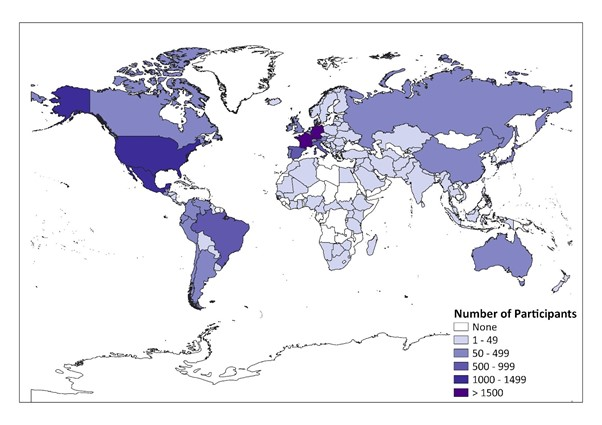

Political Orientation
Data Wrangling
Exclusion
Codebook
Descriptives
Main Analyses
Robustness Analyses
Exploratory Analyses
Supplementary Analyses
Code
Show All Code
Hide All Code
Download Rmd
Left or Right? The Link Between Political Orientation and Partner Preferences in an International Sample of Single Women

Country Distribution of Participants
First we
wrangled the data
.
We
decided which data to keep
. See the
codebook
for further details
Then we
looked at some descriptives
.
The main analyses: We
analyzed
effects of right-wing political orientation on partner preferences.
Then we
ran some robustness analyses
additionally including age as a covariate in each model.
Additionally, we
conducted exploratory analyses
as we we were interested in the heterogeneity in relationships between countries.
Finally, we provide
supplementary analyses
with a focus on preferred relationship options.
Authors of this Website
Laura Botzet (
botzet@uni-goettingen.de
)
Lena Kuschel (
lena.kuschel@stud.uni-goettingen.de
)
LS0tDQp0aXRsZTogPGZvbnQgY29sb3I9IiM2NkMyQTUiPkxlZnQgb3IgUmlnaHQ/IFRoZSBMaW5rIEJldHdlZW4gUG9saXRpY2FsIE9yaWVudGF0aW9uIGFuZCBQYXJ0bmVyIFByZWZlcmVuY2VzIGluIGFuIEludGVybmF0aW9uYWwgU2FtcGxlIG9mIFNpbmdsZSBXb21lbjwvZm9udD4NCmNzbDogYXBhLWN1c3RvbS1uby1pc3N1ZS5jc2wNCmVkaXRvcl9vcHRpb25zOiANCiAgY2h1bmtfb3V0cHV0X3R5cGU6IGNvbnNvbGUNCi0tLQ0KDQo8ZGl2IGNsYXNzPSJyb3ciPg0KDQoNCjxkaXYgY2xhc3M9ImNvbC1tZC02IGNvbC1tZC1vZmZzZXQtMSI+DQohW0NvdW50cnkgRGlzdHJpYnV0aW9uIG9mIFBhcnRpY2lwYW50c10obWFwX2NvdW50cnlfZGlzdHJpYnV0aW9uLmpwZykNCjwvZGl2Pg0KDQo8ZGl2IGNsYXNzPSJjb2wtbWQtNSI+DQoNCg0KMS4gRmlyc3Qgd2UgW3dyYW5nbGVkIHRoZSBkYXRhXSgwMV9kYXRhd3JhbmdsaW5nLmh0bWwpLg0KMi4gV2UgW2RlY2lkZWQgd2hpY2ggZGF0YSB0byBrZWVwXSgwMl9leGNsdXNpb24uaHRtbCkuIFNlZSB0aGUgW2NvZGVib29rXSgwM19jb2RlYm9vay5odG1sKSBmb3IgZnVydGhlciBkZXRhaWxzDQozLiBUaGVuIHdlIFtsb29rZWQgYXQgc29tZSBkZXNjcmlwdGl2ZXNdKDA0X2Rlc2NyaXB0aXZlcy5odG1sKS4NCjQuIFRoZSBtYWluIGFuYWx5c2VzOiBXZSBbYW5hbHl6ZWRdKDA1X2FuYWx5c2VzLmh0bWwpIGVmZmVjdHMgb2YgcmlnaHQtd2luZyBwb2xpdGljYWwgb3JpZW50YXRpb24gb24gcGFydG5lciBwcmVmZXJlbmNlcy4NCjUuIFRoZW4gd2UgW3JhbiBzb21lIHJvYnVzdG5lc3MgYW5hbHlzZXNdKDA2X3JvYnVzdG5lc3NfYW5hbHlzZXMuaHRtbCkgYWRkaXRpb25hbGx5IGluY2x1ZGluZyBhZ2UgYXMgYSBjb3ZhcmlhdGUgaW4gZWFjaCBtb2RlbC4NCjYuIEFkZGl0aW9uYWxseSwgd2UgW2NvbmR1Y3RlZCBleHBsb3JhdG9yeSBhbmFseXNlc10oMDlfYW5hbHlzZXNfZXhwbG9yYXRvcnkuaHRtbCkgYXMgd2Ugd2Ugd2VyZSBpbnRlcmVzdGVkIGluIHRoZSBoZXRlcm9nZW5laXR5IGluIHJlbGF0aW9uc2hpcHMgYmV0d2VlbiBjb3VudHJpZXMuDQo3LiBGaW5hbGx5LCB3ZSBwcm92aWRlIFtzdXBwbGVtZW50YXJ5IGFuYWx5c2VzXSgxMl9zdXBwbGVtZW50Lmh0bWwpIHdpdGggYSBmb2N1cyBvbiBwcmVmZXJyZWQgcmVsYXRpb25zaGlwIG9wdGlvbnMuDQoNCg0KDQo8L2Rpdj4NCg0KPC9kaXY+DQoNCg0KDQoNCjwvZGl2Pg0KDQojIyMjIEF1dGhvcnMgb2YgdGhpcyBXZWJzaXRlDQoNCkxhdXJhIEJvdHpldCAoYm90emV0QHVuaS1nb2V0dGluZ2VuLmRlKQ0KDQpMZW5hIEt1c2NoZWwgKGxlbmEua3VzY2hlbEBzdHVkLnVuaS1nb2V0dGluZ2VuLmRlKSAgDQoNCg0K